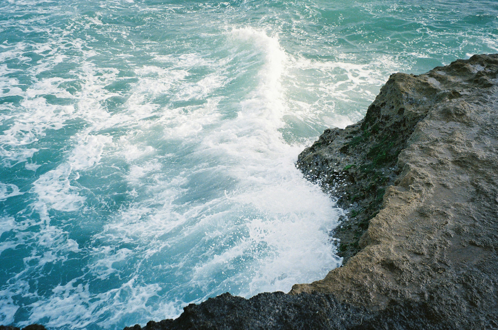
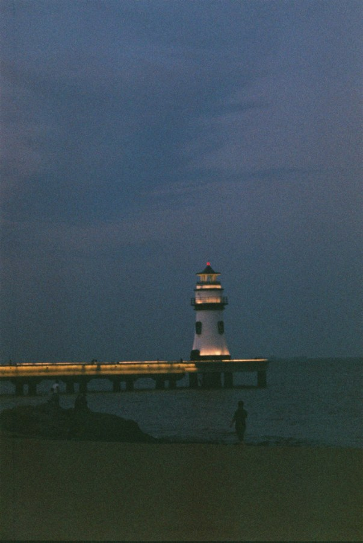
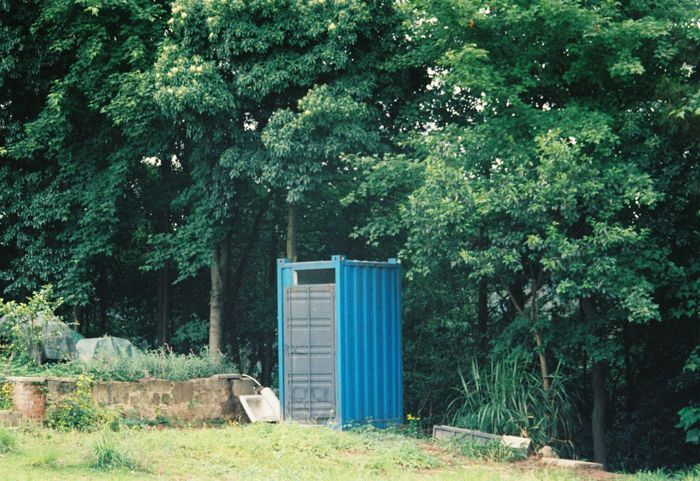
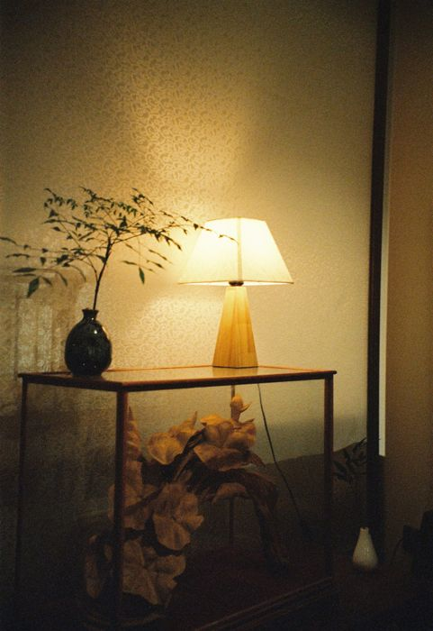

我的第一个网站照片序 · 这个网站的第一张照片

山城远眺冷调 · 城市 — 千厮门大桥与江北嘴，雾气里的山城

海港与富士冷调 · 海港 — 晴日海港，远处是雪顶的富士山


灯塔黄昏冷调 · 海 — 蓝调时刻，灯塔亮起灯来


蓝箱子绿调 · 野地 — 绿荫深处，立着一只蓝色的集装箱

林间绿调 · 密林 — 雨后密林，满眼深绿

湖边的人绿调 · 湖畔 — 垂柳之下，临水而坐


一盏灯暖调 · 室内 — 室内的暖光与花影

暮色暖调 · 桥 — 粉紫色的天，桥栏与远塔